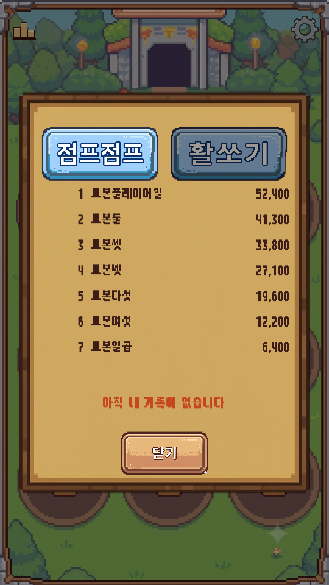
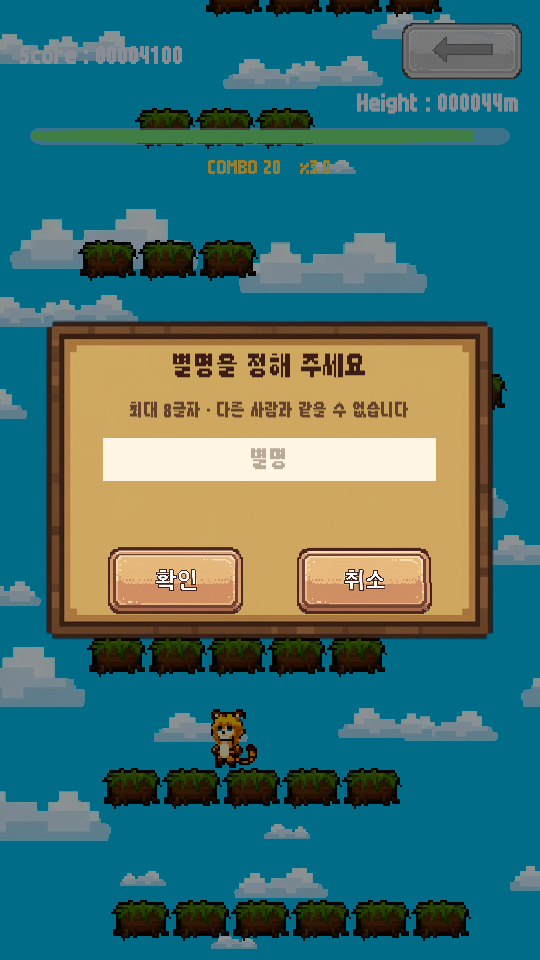

<title>랭킹 뼈대와 화면</title>
<meta charset="utf-8">
<style>
  :root{
    --bg:#f7f6f3; --card:#fff; --ink:#1c1b19; --muted:#6b6862;
    --line:#e3e0da; --accent:#c2410c; --ok:#15803d; --warn:#b45309;
  }
  @media (prefers-color-scheme:dark){:root:not([data-theme="light"]){
    --bg:#16151a; --card:#1f1e24; --ink:#eceaf0; --muted:#a3a0ab;
    --line:#33313b; --accent:#fb923c; --ok:#4ade80; --warn:#fbbf24;
  }}
  :root[data-theme="dark"]{
    --bg:#16151a; --card:#1f1e24; --ink:#eceaf0; --muted:#a3a0ab;
    --line:#33313b; --accent:#fb923c; --ok:#4ade80; --warn:#fbbf24;
  }
  body{background:var(--bg);color:var(--ink);font:16px/1.65 "Malgun Gothic","Segoe UI",system-ui,sans-serif;
       margin:0;padding:40px 20px 80px}
  main{max-width:880px;margin:0 auto}
  h1{font-size:28px;line-height:1.3;margin:0 0 6px;letter-spacing:-.02em}
  .sub{color:var(--muted);margin:0 0 36px;font-size:14px}
  h2{font-size:19px;margin:44px 0 14px;padding-bottom:8px;border-bottom:2px solid var(--line)}
  h3{font-size:15px;margin:26px 0 8px;color:var(--accent)}
  section{background:var(--card);border:1px solid var(--line);border-radius:12px;padding:4px 24px 24px;margin-bottom:8px}
  .tw{overflow-x:auto;margin:14px 0}
  table{border-collapse:collapse;width:100%;font-size:14px;min-width:460px}
  th,td{padding:7px 10px;text-align:left;border-bottom:1px solid var(--line);vertical-align:top}
  th{font-weight:600;color:var(--muted);font-size:12.5px;text-transform:uppercase;letter-spacing:.04em}
  tr:last-child td{border-bottom:none}
  code{background:var(--bg);border:1px solid var(--line);border-radius:4px;padding:1px 5px;font-size:13px;
       font-family:Consolas,"Cascadia Mono",monospace}
  ul{padding-left:20px} li{margin:6px 0}
  ol{padding-left:22px} ol li{margin:8px 0}
  .tag{display:inline-block;font-size:12px;padding:2px 9px;border-radius:99px;border:1px solid currentColor;
       font-weight:600;vertical-align:middle}
  .ok{color:var(--ok)} .warn{color:var(--warn)} .bad{color:var(--accent)}
  .note{border-left:3px solid var(--warn);background:var(--bg);padding:12px 16px;border-radius:0 8px 8px 0;margin:16px 0}
  .note p{margin:6px 0}
  .lead{font-size:17px}
  figure{margin:0}
  .shots{display:flex;gap:14px;flex-wrap:wrap;margin:18px 0}
  .shots figure{flex:1 1 220px;max-width:270px}
  .shots img{width:100%;display:block;border:1px solid var(--line);border-radius:8px}
  .shots figcaption{font-size:12.5px;color:var(--muted);margin-top:8px;text-align:center;line-height:1.5}
  .flow{background:var(--bg);border:1px solid var(--line);border-radius:8px;padding:14px 16px;margin:16px 0;
        font-family:Consolas,"Cascadia Mono",monospace;font-size:13px;line-height:1.9;overflow-x:auto;white-space:pre}
</style>

<main>
<h1>랭킹 뼈대와 화면</h1>
<p class="sub">심심할 때 하는 게임 &middot; 2026-09-09 &middot; 랭킹·광고 1단계 &middot; 배치 모드 검증 완료</p>

<section>
<h2>한 줄 요약</h2>
<p class="lead"><strong>서버도 광고 SDK 도 아직 넣지 않았는데, 별명을 받고 랭킹 창을 여는 흐름이 전부 돌아갑니다.</strong>
가짜 구현을 끼워 두었기 때문입니다. 2단계에서 Firebase 로 갈아 끼울 때
<strong>게임 코드와 화면 코드는 한 줄도 고치지 않습니다.</strong></p>

<div class="flow">한 판이 끝난다
   |
   +-- 별명이 없으면  ->  [별명 창]  ->  겹치면 다시 받는다
   |
   +-- 점수를 올린다

로비 왼쪽 위 아이콘  ->  [랭킹 창]  ->  게임 이름표 탭으로 게임 전환</div>
</section>

<section>
<h2>화면</h2>
<div class="shots">
<figure>
  <figcaption>랭킹 창 &mdash; 로비 왼쪽 위 아이콘으로 엽니다<br>줄은 <strong>에디터 표본</strong>입니다</figcaption></figure>
<figure>
  <figcaption>별명 창 &mdash; 처음 랭킹에 오를 때 한 번</figcaption></figure>
<figure>
  <figcaption>로비 &mdash; 왼쪽 위에 랭킹 아이콘이 생겼습니다</figcaption></figure>
</div>

<div class="note">
<p><strong>랭킹 줄의 "표본플레이어일 / 표본둘 …" 은 에디터에서만 나옵니다.</strong>
줄이 하나도 없으면 자리와 글자 폭을 확인할 수 없어서 넣어 둔 것입니다.
<strong>폰에 넣은 앱에는 나오지 않습니다</strong> &mdash; 없는 사람을 있는 것처럼 보여 주면 안 되니까요.</p>
</div>
</section>

<section>
<h2>정하신 두 가지를 이렇게 넣었습니다</h2>

<h3>1. 별명은 처음 랭킹에 등록할 때 &middot; 하나뿐인 이름</h3>
<ul>
<li>앱을 켜자마자 묻지 않습니다. <strong>점수가 난 뒤</strong>에 물어봅니다.</li>
<li>0점으로 끝난 판은 아예 묻지 않습니다.</li>
<li>겹치면 <strong>"이미 있는 별명입니다"</strong> 를 띄우고 다시 받습니다.</li>
<li>[취소] 로 닫으면 그 판은 랭킹에 오르지 않고, <strong>다음 판에 다시 물어봅니다.</strong></li>
<li>앞뒤 공백과 연속 공백은 정리하고, <strong>최대 8글자</strong>로 자릅니다 (설정에서 바꿀 수 있습니다).</li>
</ul>

<div class="note">
<p><strong>"하나뿐인 이름" 은 서버가 있어야 진짜로 지켜집니다.</strong>
지금은 서버가 없어 표본 별명하고만 비교합니다 &mdash; 흐름과 화면을 확인하기 위한 것입니다.
2단계에서 Firestore 의 <em>트랜잭션</em>으로 붙입니다.
"빈자리인지 확인" 과 "내 것으로 표시" 를 <strong>한 번에</strong> 처리해야
두 사람이 같은 순간에 같은 별명을 잡는 일이 없습니다.</p>
</div>

<h3>2. 랭킹은 로비 아이콘으로 여는 별도 창</h3>
<ul>
<li>자리는 <strong>톱니바퀴와 좌우 대칭</strong>인 왼쪽 위입니다. 크기와 높이도 같습니다.</li>
<li>게임마다 표가 다르므로 <strong>로비 이름표 그림이 그대로 탭</strong>이 됩니다.
    게임을 추가하면 탭도 저절로 늘어납니다.</li>
<li>한 화면에 8줄. 맨 아래에 <strong>내 순위</strong>가 따로 나옵니다.</li>
<li>인터넷이 안 되면 "랭킹을 불러오지 못했습니다" 만 뜨고 <strong>게임은 그대로 돌아갑니다.</strong></li>
</ul>

<div class="note">
<p><strong>랭킹 아이콘은 아직 임시 그림입니다</strong> (코드가 그린 시상대 모양).
진짜 그림을 그리시면 작업 폴더나 <code>@리소스 추가_N차</code> 에 <strong><code>Rank.png</code></strong> 로 넣고
Build All Scenes 를 누르시면 그대로 바뀝니다. 톱니바퀴와 같은 크기로 들어갑니다.</p>
</div>
</section>

<section>
<h2>새 창을 만드는 데 새 그림이 필요 없었습니다</h2>
<p>랭킹 창은 세로로 길고 별명 창은 낮은데, 가지고 계신 판 그림은 가로로 넓은 한 장뿐입니다.
그대로 늘리면 테두리가 같이 늘어나 뭉개집니다.</p>
<p>그래서 판 그림을 <strong>9-슬라이스</strong>로 잡았습니다 &mdash; 테두리 34px 를 모서리로 표시해 두면,
<strong>가운데만 늘어나고 테두리 두께는 그대로</strong>입니다.
앞으로 어떤 크기의 창을 만들어도 그림을 새로 그리실 필요가 없습니다.</p>
</section>

<section>
<h2>만든 것</h2>
<div class="tw"><table>
<tr><th>파일</th><th>무엇</th></tr>
<tr><td><code>PlayerIdentity.cs</code></td><td>고유 번호(PID) + 별명. 나중에 Firebase UID 를 받아 씁니다</td></tr>
<tr><td><code>PlayCounter.cs</code> · <code>AdGate.cs</code></td><td>판 수 세기, <strong>2판마다 + 최소 90초</strong> 판정</td></tr>
<tr><td><code>GameSession.cs</code></td><td>"한 판 끝났다" 가 모이는 단 한 곳</td></tr>
<tr><td><code>RankingPopup.cs</code> · <code>NicknamePopup.cs</code></td><td>랭킹 창 · 별명 창</td></tr>
<tr><td><code>RankingFlow.cs</code></td><td>판 끝 → 별명 확인 → 점수 등록</td></tr>
<tr><td><code>Services.cs</code> 외</td><td>랭킹·광고의 겉모양과 가짜 구현</td></tr>
<tr><td><code>ArcadeConfig.asset</code></td><td>광고 간격 · 랭킹 줄 수 · 별명 길이</td></tr>
</table></div>
<p><strong>두 게임의 코드는 <code>EndRun</code> 에 한 줄씩 늘어난 것이 전부입니다.</strong>
새 미니게임을 만들어도 그 한 줄이면 랭킹에 붙습니다.</p>

<div class="note">
<p><strong>지킨 규칙 하나.</strong> <code>Step(dt, tap)</code> 안에서는 통신도 광고도 부르지 않습니다.
봇이 120초에 수십 판을 도는 자동 플레이테스트가 그대로 살아 있어야 하기 때문입니다.
<code>EndRun</code> 은 "끝났다" 는 사실만 남기고, 실제 일은 그 바깥에서 합니다.</p>
</div>
</section>

<section>
<h2>확인한 것 (배치 모드)</h2>
<div class="tw"><table>
<tr><th>항목</th><th>결과</th></tr>
<tr><td>Build All Scenes</td><td><span class="tag ok">통과</span> 컴파일 오류 0건, 씬 4장</td></tr>
<tr><td>랭킹·광고 자체 점검 12건</td><td><span class="tag ok">전부 통과</span> 2판마다 광고 / 별명 다듬기 / 순위</td></tr>
<tr><td>점프점프 플레이테스트</td><td><span class="tag ok">통과</span></td></tr>
<tr><td>활쏘기 플레이테스트</td><td><span class="tag ok">통과</span></td></tr>
<tr><td>랭킹 창 · 별명 창 캡처</td><td><span class="tag ok">통과</span> 미리보기에 새로 추가했습니다</td></tr>
</table></div>
<p class="sub" style="margin-top:16px">단, 이 두 기능은 <strong>배치 모드로 "눌리는지" 까지는 확인할 수 없습니다.</strong>
에디터에서 Play 로 한 번 눌러 봐 주세요 &mdash; 로비 왼쪽 위 아이콘, 그리고 게임을 한 판 끝내기.</p>
</section>

<section>
<h2>다음</h2>
<ol>
<li><strong>2단계 &mdash; Firebase.</strong> 사용자께서 웹에서 하실 일(프로젝트 만들기 · 앱 등록 ·
    설정 파일 받기)을 화면 순서대로 정리해 드리겠습니다. 그 뒤 갈아 끼우는 일은 제가 합니다.</li>
<li><strong>3단계 &mdash; 광고.</strong> 언제 띄울지(다음 화면으로 넘어가는 길목)는 이미 정해져 있고,
    AdMob 을 붙이면 그 자리에 들어갑니다.</li>
</ol>
<p>그 전에 정하실 것 세 가지는 <code>랭킹_광고_적용계획.html</code> 의 "남은 작은 질문" 에 적어 두었습니다
(별명 바꾸기 / 욕설 거르기 / 화면 문구를 한글로 통일할지).</p>
</section>

</main>
